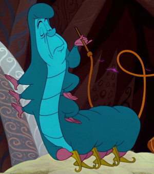

In what concerns the continuous evaluation solving exercises grade during the semester, you should submit until 23:59 of November 1st
(this exercise will still be available for submission after that deadline, but without counting towards your grade)
[to understand the context of this problem, you should read the class #04 exercise sheet]
In this problem you should submit a function as described. Inside the function do not print anything that was not asked!
The name of the .py source file you submit to Mooshak should NOT start with a digit (you will get an error if you submit it like that).

Just as you were about to catch your breath from the Cheshire Cat's challenge, the Caterpillar, puffing on his hookah and perched atop a giant mushroom, gazed down at you. With an air of mystery and curiosity, he asked, "Who... are... you?"Before you could answer, the Caterpillar leaned forward, exhaling a cloud of smoke in the shape of a question mark, and said, "Prove your worth! I want to see if you are clever enough to clean up words, like I clean up my thoughts."
Write a function remove_all(word, ch) that given a string word constituted by lower case letters and a lower case letter ch, returns a new string that is the same as the original one but with all occurrences of character ch removed.
The following limits are guaranteed in all the test cases that will be given to your program:
| 1 ≤ |word| ≤ 100 | size of the input string |
| Example Function Calls | Example Output |
print(remove_all("suspect", "s"))
print(remove_all("metallica", "l"))
print(remove_all("abracadabra", "a"))
|
upect metaica brcdbr |